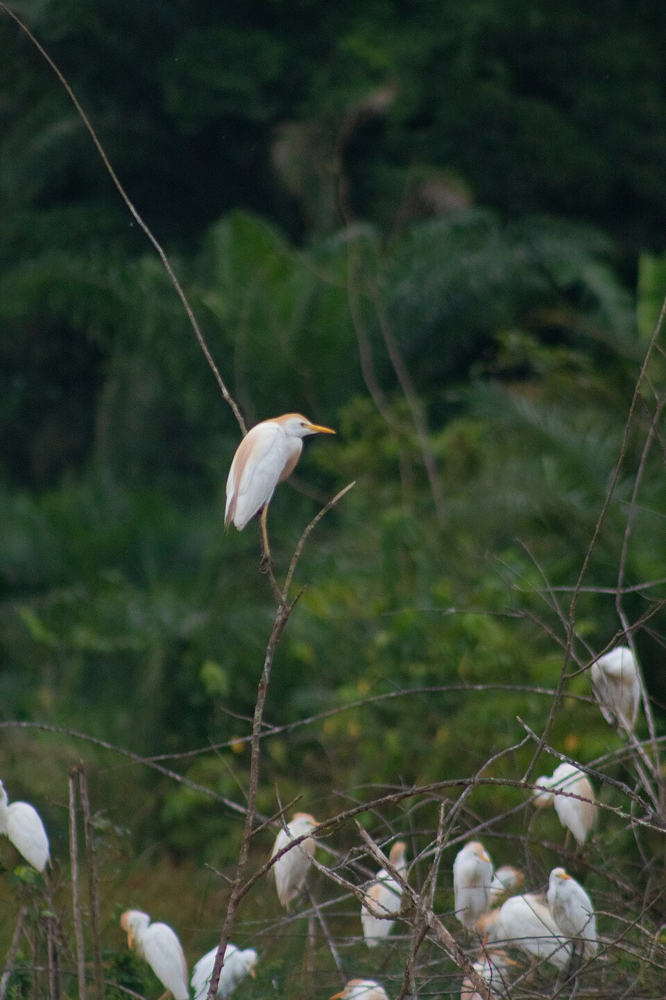
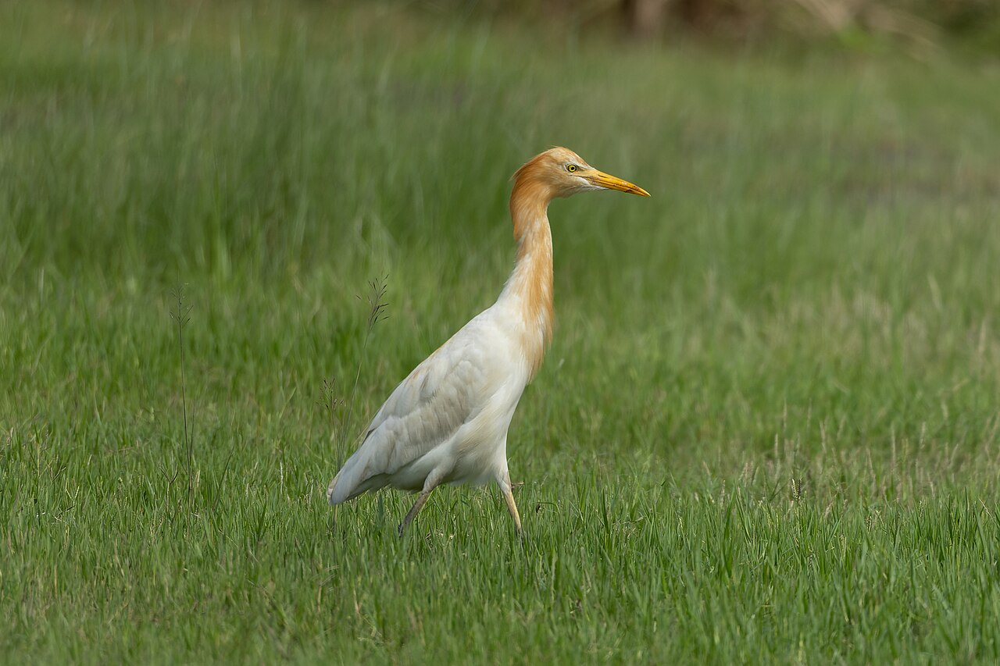
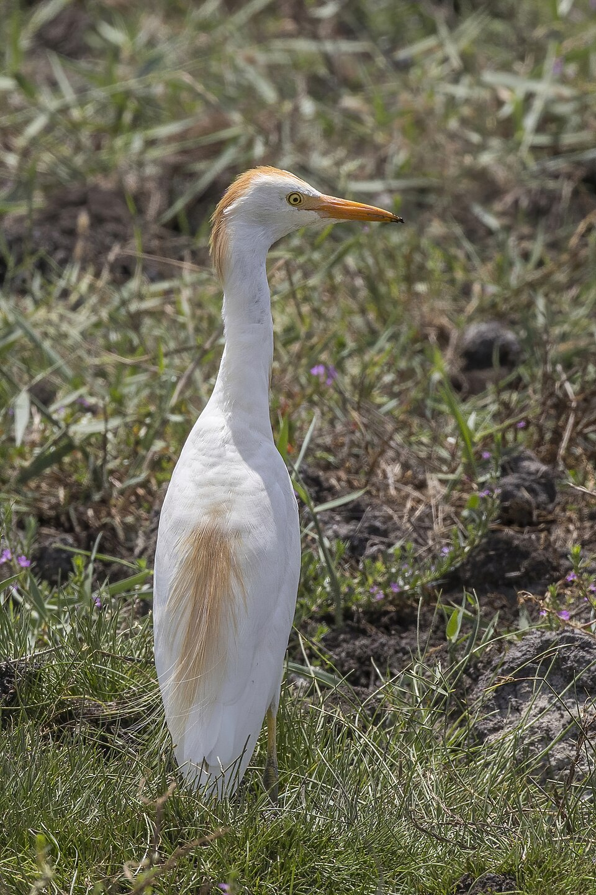
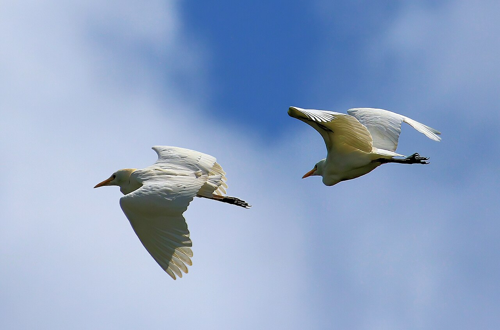
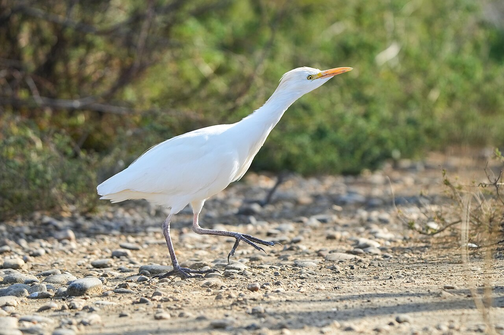

國中自然 · 科普讀本
先認識黃頭鷺。你看到的成群白鳥，很可能就是牠。

01 · 先認識牠
黃頭鷺屬於鷺科，又叫牛背鷺。很多人心中的白鷺，是站在水邊等魚的那種。黃頭鷺更常在草地、農田、牧場和開闊地走路找食物。


牠吃的主要是昆蟲和小型動物，例如蚱蜢、蟋蟀、飛蟲，也會吃蚯蚓、蛙，以及其他小型脊椎動物。所以你在稻田、旱田看到「白鷺」，先別急著認定牠是來捕魚的。
02 · 怎麼辨認

小白鷺嘴多是黑的，腳趾偏黃，較常在水邊找魚。黃頭鷺嘴在繁殖季偏橙黃，而且更常走上草地。南非。Alandmanson／CC BY-SA 4.0
1. 現在是繁殖季，還是非繁殖季？
2. 頭、頸、胸、背有沒有橙黃羽？
3. 飛起來時，脖子是縮著還是伸直？
4. 牠是在乾地走路，還是在水邊等魚？
只看到遠方一群白鳥，先記成「白色鷺科鳥類」。桃園、三峽一帶也可能看見黃頭鷺移動，但要看清羽色、嘴腳，或留下照片，才能確認那一群。
03 · 找食物

牛走過草地，會把昆蟲驚起來。耕耘機翻土，會把土裡的昆蟲、蚯蚓翻出來。黃頭鷺跟在旁邊，找食物的效率就比較高。過去牠甚至會站上牛背，所以有了「牛背鷺」這個名字。
蚱蜢、蟋蟀、飛蟲、蚯蚓、蛙，以及其他小型脊椎動物。覓食時會快走、小跑、停下來看，也會跳起來啄飛蟲。
許多鷺科鳥類以魚為主，所以你在溪邊、海邊更容易遇到牠們。黃頭鷺則常出現在平地到中海拔的田、草原、牧場，清晨和黃昏也會成群往返覓食區與夜棲地。
04 · 一年的節奏
農業部鳥類資料指出：黃頭鷺在臺灣全年都可能見到，族群裡有夏候鳥、冬候鳥和過境個體。夏候鳥大約 9 月離臺南遷，隔年 3 月左右再回來繁殖。至於是不是有一部分全年留在臺灣，還需要更多研究。
| 時間 | 常見狀況 |
|---|---|
| 春季 | 一部分個體回到臺灣北部或其他繁殖地。 |
| 春、夏季 | 繁殖、育雛。這時較容易看見橙黃色繁殖羽。 |
| 8 月下旬到 10 月中旬 | 秋季南遷。大型群飛最容易出現在這段時間。 |
| 秋、冬季 | 有些往臺灣南部移動，有些繼續前往東南亞等較溫暖的地區。北方來的冬候鳥，也可能這時出現在臺灣。 |
夏候鳥：春夏來繁殖，秋天往南。
冬候鳥：秋天從更北方來過冬。
過境：路經這裡，不是全程都留下。
鳥友多年觀察，曾記錄鳥群由北往南，經過水庫、溪谷，其中包括雲林樟湖一帶，再到嘉義梅山。這些是觀察整理，不是每隻鳥都戴著追蹤器走出的固定航線。
05 · 萬鷺朝鳳
嘉義縣梅山鄉太興村的生毛樹溪谷，每年秋天常出現這個景象。鳥群飛進溪谷、盤旋，再越過山頭。數量很多時，遠看像一條白色長帶在山谷裡翻轉。當地把生毛樹溪一帶稱作「鳳凰穴」，於是有了「萬鷺朝鳳」這個名字。
觀察紀錄提到，鳥群常沿雲林樟湖一帶飛來，進入生毛樹溪山谷，藉氣流飛行並變換隊形。牠們不一定是停下來休息或覓食。隊形散開又聚合，可能和每隻鳥在氣流中的路徑有關。目前能說明的是：鳥群會利用山谷氣流。還不宜把每一次隊形變化，都解釋成有一位固定隊長在下指令。
大型群飛大約出現在 8 月下旬到 10 月中旬。風景區與地方介紹，常把白露前後到雙十節前後當成觀察窗口。數量和出現時間受天候、風向影響，不會每天都一樣。
06 · 看的時候
鳥群持續往同一方向移動，或在山谷盤旋升高後越過山稜，然後離開。太興村看到的「萬鷺朝鳳」，主要是這一種。
黃頭鷺本來就愛群居、集體夜棲。清晨、黃昏，牠們也會成群在覓食地和睡覺的樹林之間來去。這不一定是正在南遷。
成群飛，可能讓個體更容易跟上同伴，也一起使用同一段氣流。可是若沒有追蹤資料，就不要替某一群鳥編出「誰帶隊、誰決定方向」的故事。
保持安靜，站在不妨礙居民的安全位置。不追鳥、不投食，也不要為了靠近而走進農田或私人地。
2026 年太興村這季，嘉義縣公告：9 月 11 日到 10 月 31 日，距地面約 122 公尺（400 呎）以下禁止無人機。違規可能被罰 3 萬到 15 萬元。
這是今年這季的規定。以後再去，先查民航局無人機系統或縣府最新公告。
07 · 想一想
1. 因為牠常出現在牛附近，甚至站上牛背，等牛走路時驚起昆蟲。現在也常跟在耕耘機後面。
2. 非繁殖季身體大致是白的。要再看嘴、腳、環境，以及有沒有橙黃繁殖羽。
3. 鷺飛行時通常把脖子縮起來；鶴把脖子伸直。
4. 是太興村一帶對秋季群飛景象的稱呼，和「鳳凰穴」的地方說法有關，不是正式學名。
5. 目前觀察能說明的是鳥群會利用山谷氣流。沒有追蹤每一隻鳥之前，不能斷定隊形變化等於有人在指揮。
你看到的很可能是黃頭鷺的秋季南遷。牠們平時在草地、農田找蟲，秋天沿山線移動；太興的山谷氣流讓這段路更容易被人看見，於是有了「萬鷺朝鳳」。